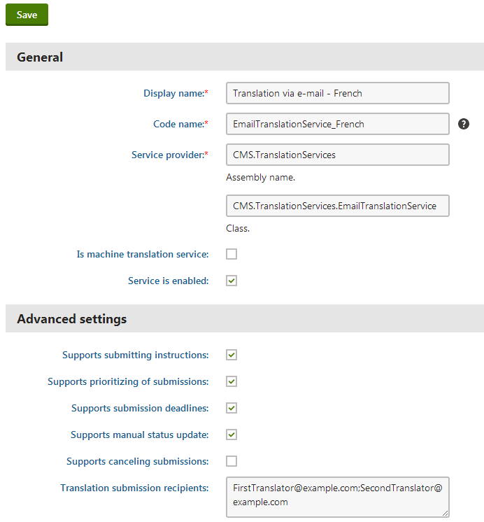

Human translation services - Email translation
The Email translation service delivers the translation data via email. When a user submits a page for translation, the service creates a zip package containing the XLIFF source files and sends it to the specified translators as an attachment of an email message. The email service allows you to exchange data with translators or agencies that do not have their own API for managing submissions.
The system cannot cancel email translation submissions once they have been sent. In these cases, you need to contact the translators directly.
The email translation service does not support automatic retrieval of completed translations. The translators can submit the files by:
Uploading the zip archive containing the finished translation via a link included in the original assignment email
Sending the translation (in XLIFF format) to a member of the website's staff, who can then import it manually through the Translations application.
Once the translation is imported into the corresponding submission, you can process it to transfer the new content into the pages.
Note: Email translation uses the Translation services - Submit translation email template. The service does not work if you delete this template (a template with the code name translationservice.submittranslation must exist in the system).
Configuring the email translation service
To set up the email translation service:
Ensure that your application is configured to send emails through an appropriate SMTP server.
Open the Settings application.
Select the Content -> Translation services category.
Fill in the following settings in the Translation via email section:
Setting
Description
Translation submission recipients
Sets the addresses to which the system sends translation assignments through the e‑mail service. You can enter multiple email addresses separated by semicolons.
Email sender
When sending translation assignment emails, the system automatically sets the sender to the address of the user who submitted the translation. The value of this setting is used if no user address is available, for example in the case of translations submitted automatically or via the API.
Click Save.
The service sends the translation emails using the specified addresses.
Kentico EMS required
Features described on this page require the Kentico EMS license.
Setting language-specific recipients
If you need to assign different translator addresses for individual languages:
Open the Translation services application.
Create a clone of the Translation via email service for each additional language. Click Other actions (...) next to the service and select Clone in the menu.
Edit the services and enter the appropriate translator addresses into the Translation submission recipients property. This property overrides the Email sender setting.

Cloned e-mail translation service for the French languageClick Save.
When submitting pages for translation, users need to select the clone of the email translation service that matches the target language.
Customizing the translation emails
To change the content of the email messages that the service sends to translators, you need to modify the appropriate email template:
Open the Email templates application.
Edit the Translation services - Submit translation template.
Alter the template according to your specific requirements.
You can use macro expressions to dynamically insert the values of the given translation submission. For example:
{% Submission.SubmissionSourceCulture %} - returns the culture code of the translation source language.
{% Submission.SubmissionTargetCulture %} - returns the culture code of the target language.
{% GetTranslationPriority(Submission.SubmissionPriority) %} - returns the priority set for the submission (low, normal or high).
{% Submission.SubmissionDeadline %} - returns the date and time of the submission's deadline.
{% Submission.SubmissionInstructions %} - returns the additional instructions entered for the submission.
{% Submission.SubmissionWordCount %} - returns the total number of words in the translation source text.
{%SubmissionLink%} - returns the URL of a system page where users can upload finished translation packages.
Click Save.
(Optional) Follow the steps described for the manual translation service if you wish to customize the instruction files included in the zip package attached to the e‑mails.
The service sends all translation assignment emails based on the current email and instruction file templates.